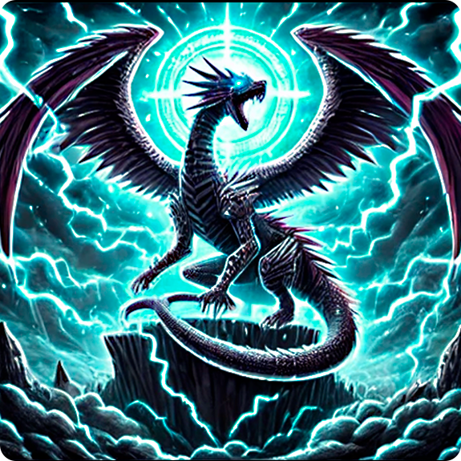

-
Cosmos Sentinel, the Galactic Guardian

This imposing cybernetic warrior is the embodiment of the harmony between advanced technology and cosmic energy. Wielding the Star Scepter, Cosmos Sentinel can manipulate space and time, nullifying attacks and empowering allies.
ATK/ 2800 DEF/ 2500 -
Nebuladragon, the Being of the Eternal Stars
A mythical creature born from the fusion of nebulae and stellar energy. With its crystalline scales, Nebuladragon channels the power of the cosmos, devastating its enemies with blasts of pure energy. It is said to appear only in times of universal chaos, as a harbinger of renewal and celestial balance.
ATK/ 3200 DEF/ 2000 -
Cyberblade Paladin, the Digital Knight

Armed with the legendary Cyberblade, this cybernetic knight is a protector of the digital dimensions. With enhanced reflexes and an unwavering sense of justice, he fights invaders who threaten the balance of the virtual and real worlds. His sword emanates a technological glow that can cut through both physical matter and digital code.
ATK/ 2600 DEF/ 2300 -
Mechadragon X, the Biomechanical Destroyer

A deadly fusion of draconic biology and cybernetic engineering, Mechadragon X was created to be the ultimate weapon. With its energized wings and multiple power cores, it is capable of unleashing devastating blasts and neutralizing even the strongest adversaries. Its presence on the battlefield is a harbinger of imminent destruction, known as the “End of Ages.”
ATK/ 3500 DEF/ 3000 -
Archmage Stellarion, Guardian of the Stars

An enigmatic mage who manipulates the forces of the cosmos to protect universal balance. Archmage Stellarion uses his Cosmic Scepter to channel spells of starlight, banishing enemies to distant dimensions or empowering allies with astral energy. His presence on the battlefield is shrouded in mystery and power, and he is revered as the "Sage of the Infinite."
ATK/ 2400 DEF/ 2600 -
Aegis Knight, Guardian of the Firmament

Clad in armor forged from star fragments, Aegis Knight is the ultimate defender of the dimensions. Wielding the Astral Sword and Celestial Shield, he has the power to nullify enemy attacks and counterattack with blows of pure cosmic energy. His oath is to protect the balance between light and darkness, and he is remembered as the "Fortress of the Cosmos."
ATK/ 3000 DEF/ 2800 -
Stormbringer Dragon, the Herald of Storms

This mighty dragon dominates the skies, summoning thunder and lightning with the beat of its wings. Stormbringer Dragon is the embodiment of nature’s fury, destroying everything in its path with lightning blasts and piercing winds. Its appearance is said to be the prelude to an endless storm, bringing destruction and renewal to the battlefields.
ATK/ 2900 DEF/ 2100